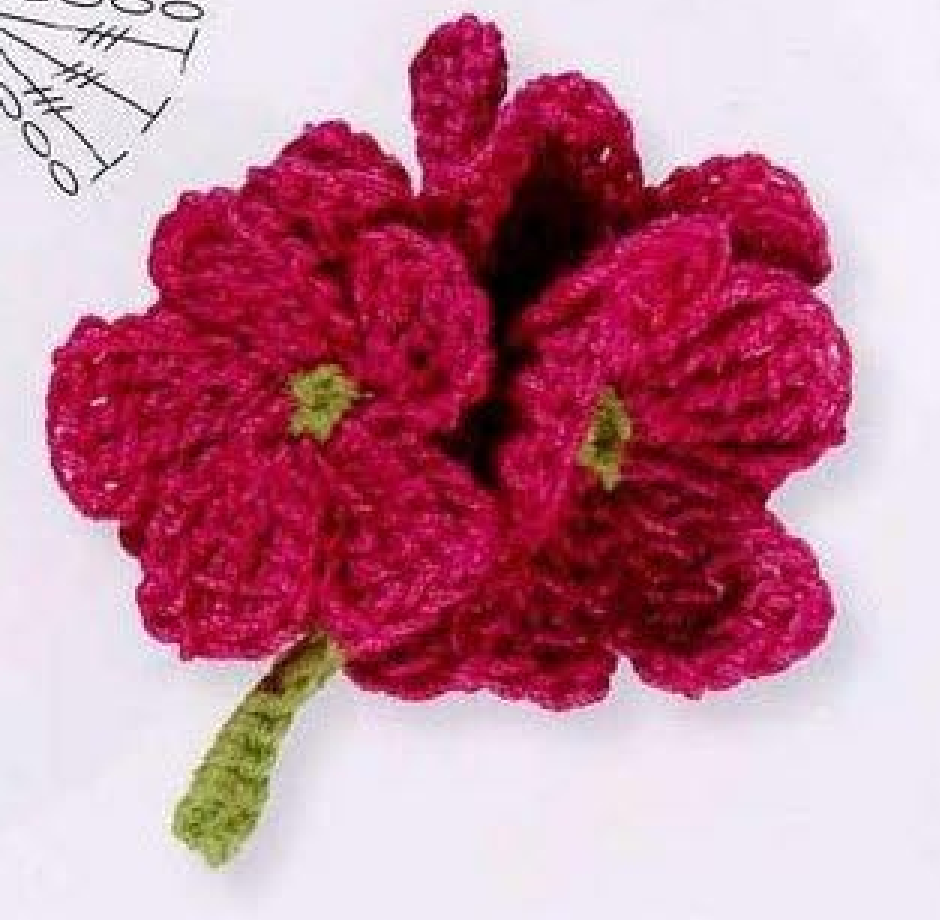
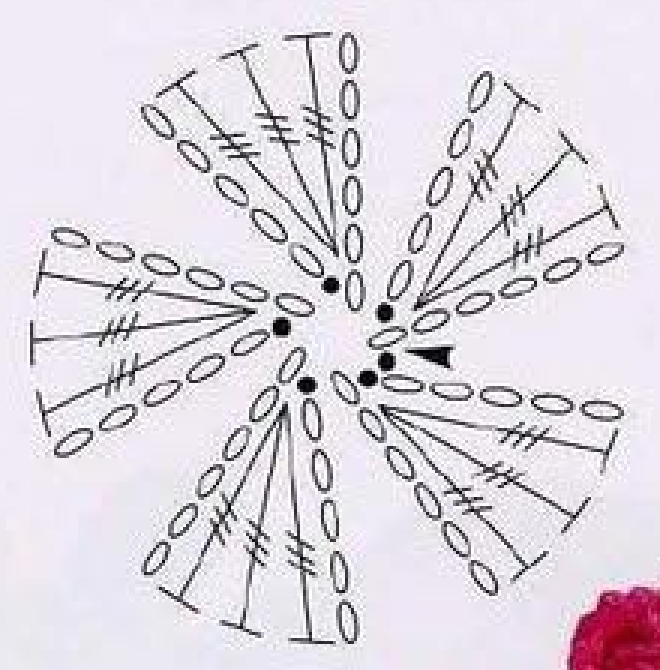
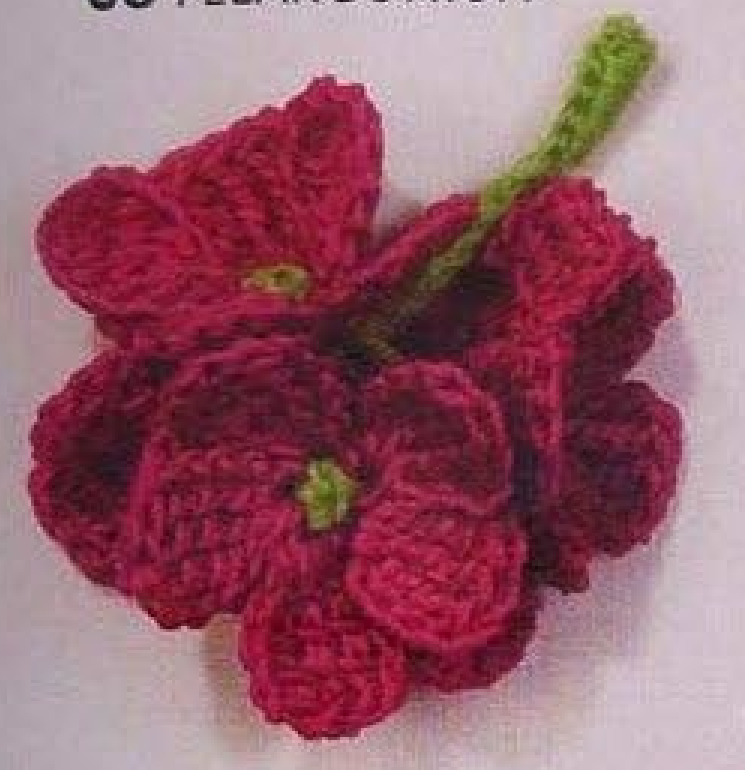

Crochet Pelargonium is a cluster of five separately made pink flowers, each with a small green center. Long green ends are retained from those centers, knotted together, and used to form one short shared stem. This guide follows pattern 68 in Lesley Stanfield’s 100 Flowers to Knit & Crochet, with the complete flower, center, stem, and securing sequence translated into US crochet terms.

Key Takeaways
- Use 4-ply cotton in pink A and green B.
- Make five flowers, each with five chain-sided tall-stitch petals.
- Three completed US double trebles share each petal base.
- Retain an approximately 20 cm, 8 inch, green end from every center.
- One retained end makes sixteen singles over the other four to form the shared stem.
- Finish by returning ends through the stem and securing flowers above the knot.
CROCHET PELARGONIUM FLOWER CLUSTER PATTERN
Project: A five-flower cluster with one short green stem. Each flower has five pink petals and a green surface-slip-stitch center. The source groups this entry among intermediate designs. US terms are used below.
| Skill level | Intermediate in the source. Practical focus: very tall stitches, surface slip stitches, retained ends, and cord-style stem assembly. |
|---|---|
| Base size | 5 flowers, each with 5 petals, assembled on 1 stem. Finished dimensions are not specified. |
| Yarn | 4-ply cotton: pink A and green B. |
| Quantity, hook, gauge | Not specified. Choose a hook appropriate to your cotton and evaluate one complete flower. |
| Notions | Scissors and a fine blunt wool needle for passing retained ends through the center and stem. |
| US abbreviations | ch = chain; sc = single crochet; dtr = double treble crochet; sl st = slip stitch; RS = right side; WS = wrong side. UK dc = US sc; UK trtr = US dtr. |
| Pink petals, make 5 flowers | With RS facing and A, [ch 6, skip 5 chains, 3 dtr in the next chain, ch 5, sl st in the first of the 6 chains] 5 times. Join into a ring with a sl st in the first chain. Fasten off invisibly. |
| Green center, each flower | With RS facing and B held underneath, pull a loop through the base of one petal to join. Sl st in the base of each of the next 4 petals, then sl st in the join. Leave an approximately 20 cm, 8 inch, end and fasten off invisibly. Thread this end on a wool needle and take it through the center to WS. Secure all other ends; retain this one. |
| Shared stem | Knot the 5 long green ends close to the flowers. Starting at the knot, use 1 end to work 16 sc over the other 4 ends. Fasten off invisibly. |
| Secure the flowers | One at a time, thread an end on a fine wool needle, take it over a stem sc and then through the stem to the flower. Work 2 or 3 sc above the knot to secure the flower. Fasten off. |
| Complete source set | Five five-petal flowers, five green centers with retained ends, one sixteen-single shared stem, and the final securing work. No separate leaves or additional sprigs are supplied. |
Understand the Five-Flower Assembly
The five flowers are made separately before they are gathered into a cluster. Each has a ring of five pink petals formed from chain-sided groups of very tall stitches. The green center is added from the underside through the petal bases, leaving a long working end for later assembly.
Those five green ends are functional parts of the stem. They are not ordinary ends to trim after finishing the centers. One becomes the working strand for sixteen singles, while the other four form the core over which the stitches are made. The resulting cord holds the flowers together at their knot.
The source photographs show overlapping flowers, so not every petal or center is fully exposed. The written quantity remains five complete flowers with five petals each. Do not interpret two visible green centers in one view as a two-flower version or omit hidden flowers from the required cluster.
Prepare Cotton and Preserve the Green Ends
Use 4-ply cotton in pink A and green B. The source photo’s pink is a strong deep shade; the written yarn specification simply names pink. Use the supplied color roles for the petals and centers, and keep the green yarn accessible while finishing each individual flower.
No numerical hook size, gauge, total cotton quantity, or finished cluster measurement is given. Choose a hook suited to your cotton and examine one complete flower before making the remaining four. The tall petal groups need to stay flexible enough to overlap without losing their distinct shape.
A fine blunt wool needle is useful for the later center-to-back and stem passes. The pattern gives approximately twenty centimeters, eight inches, for each retained green end. That length is an assembly end measurement rather than a stem length or finished flower diameter.
Plan end handling before beginning the centers. Secure the pink ends and ordinary green starting ends, but keep each specified long green end free. If those five ends are shortened prematurely, the written shared-stem construction cannot be completed from them as intended.
US Double Treble and the Chain-Sided Petal
The book’s UK triple treble becomes US double treble. Yarn over three times before entering the stated chain base, draw up a loop, then complete four successive yarn-over-and-draw-through-two steps. Finish the stitch fully before making the next double treble.
Every petal has three separate completed US double trebles in one chain base. They are not partial stitches held for a shared cluster closure. The six-chain opening and later five-chain side rise and descend beside the tall group, giving the petal its broad oval outline.
The six-chain start is not a new center ring by itself. Its first chain becomes the base of that individual petal after skipping the other five. The sequence is repeated five times, and only then is the whole set joined into a flower ring at its first chain.
Stitch checkpoint: UK trtr is US double treble. Use three initial yarn overs and four draw-through-two steps for each completed stitch, rather than shortening the petal to US double or treble.
Step 1: Make the First Pink Petal
With RS facing and A, chain six and skip five chains. Work three US double trebles in the next chain, which is the first chain of this six-chain section. All three tall stitches share that base and retain separate completed tops.
Chain five after the tall group, then slip stitch into the first of the six starting chains. This closes the second chain side back at the petal’s own base. Keep that first-chain placement clear while the tall stitches spread, rather than using a neighboring chain that appears easier to enter.
Do not fasten off after this petal. The next six-chain section begins from the same continuous pink working route. The individual petal shape is closed at its base, while the full flower ring remains to be completed after all five petal sections have been made.
Step 2: Repeat for Five Petals and Join the Flower
Repeat the complete sequence five times in total: six chains, skip five, three double trebles in the next chain, five chains, and a slip stitch into the first of that six-chain section. Count the first petal among the five rather than making five additional petals after it.
Each new petal has its own first-chain base. Do not put the tall groups for all five petals into the first petal’s base as a large shell. The source builds a linked set of five petal sections before forming the center ring.
Join the set into a ring with a slip stitch in the first chain of the first petal. Fasten off invisibly. Arrange the five petals gently so their bases define the small center opening. Keep those bases identifiable for the green surface-slip-stitch center that follows.
Petal checkpoint: Five repetitions make one five-petal flower. Make five complete flowers for the cluster, giving twenty-five petals across the full source set.

Step 3: Add the Green Center from Underneath
With the right side facing, hold B underneath the flower. Pull a green loop through the base of one petal to join. This brings the working loop to the visible side while the green yarn remains underneath for the surface-slip-stitch route.
Slip stitch in the base of each of the next four petals, then slip stitch in the join. These placements follow the five petal bases around the small center, rather than adding green stitches along the pink outer edges or working a separate green disc to sew on later.
Keep the green stitches compact and visible without pulling the petal bases tightly into a collapsed bundle. Use the base of each next petal as stated. Catching a tall pink stitch farther out would move the center away from its intended small ring.
Step 4: Retain the Twenty-Centimeter Green End
Leave a long green end of approximately twenty centimeters, eight inches, and fasten off invisibly. Thread this end on a wool needle and take it through the center to the wrong side. The flower’s front keeps its small green center, while the long end emerges behind for assembly.
Secure all other ends except this retained one. The instruction explicitly preserves the long end, so do not weave it through several back stitches and trim it as part of ordinary finishing. Keep it separate from the pink ends and green starting end.
Repeat the center process for every flower. Check that each completed flower has five pink petals, a small green center, and one accessible long green end on its back. Having all five ends ready makes the shared-stem knot and cord easier to work consistently.
Step 5: Make the Remaining Four Flowers
Work four more complete flowers in the same way, including their centers and retained green ends. The source says to make five flowers in total. Keep their cotton, hook, and stitch tension consistent so that the fans combine into a balanced small cluster.
Inspect each flower before assembly. A missing chain side, shortened tall stitch, or misplaced center pass is easier to correct while it is separate. Once the five green ends are knotted and covered with stem stitches, individual bases can be harder to reach.
Arrange the flowers as a loose group while keeping the long ends free. The finished photo can guide their overlap, but it does not supply a separate petal sewing pattern or require every center to face the same direction. Preserve each complete flower before deciding its position within the cluster.
The Centers Supply the Stem’s Material
The long green end from each center is retained for assembly. Five ends are gathered at the flowers; one works sixteen singles over the other four. This cord construction connects the flowers and stem through their existing yarn, rather than relying on a separately crocheted chain stem sewn on afterward.
Step 6: Knot the Ends Close to the Flowers
Knot the five long green ends together close to the flowers. Keep all five present at the knot, including the end chosen as the working strand for the next step. A missing or short end changes the available core and can prevent the full sixteen-stitch stem from being completed.
Position the knot so it gathers the flowers without dragging their green centers into the back. The source specifies closeness to the flowers rather than a numerical distance. Arrange the cluster gently, keeping the pink petals free of the knot and the retained ends below it accessible.
Do not cut the ends after tying the knot. They still have both stem and securing roles to perform. Keep the four core ends aligned enough to work over them, while separating the fifth end as the crochet working strand.
Step 7: Work Sixteen Singles over Four Ends
Starting at the knot, use one long end to work sixteen US singles over the other four ends. The four strands form a core beneath the crochet stitches. There is no separately printed sixteen-chain foundation or return row in this stem instruction.
Work the singles around the core while keeping the four enclosed ends together. Count sixteen completed singles, not individual wrapped strands. Maintain even tension so the covering forms a coherent short cord rather than widely spaced loops or a knotty section at its beginning.
Fasten off invisibly after the sixteen singles. Preserve the ends for the next securing sequence instead of trimming them flush with the stem immediately. The source still calls for them to be taken back through the stem toward the flowers.
Stem checkpoint: One end works sixteen singles over four other retained ends. A chain-and-slip-stitch stem or a separately sewn stem is a different construction.
Step 8: Return Ends and Secure the Flowers
One at a time, thread an end onto a fine wool needle. Take it over a stem single and then through the stem to the flower. Follow the stem’s interior route rather than laying an exposed green strand across the front surfaces of the pink petals.
Work two or three US singles above the knot to secure the flower, then fasten off. The source permits two or three stitches at this securing stage. This is distinct from the fixed sixteen-single cord below the knot; do not count these securing stitches as part of that stem total.
Handle the ends individually so the cluster stays manageable. After securing, inspect the flowers and stem from both sides, checking that the knot is covered appropriately and the green centers remain small and visible. Trim ordinary finishing ends only after their attachment work is complete.

Troubleshoot the Flowers and Shared Stem
A flower looks like a three-petal fan
Count the five repeated six-chain sections before joining the ring. Each contains three tall stitches but represents one petal, not three petals. A five-petal flower therefore has fifteen actual double trebles distributed among five bases, plus the chain sides.
There are too few ends for the stem
Each of the five centers should supply one retained long end. Check whether a center end was woven away or trimmed during ordinary finishing. Adding a new independent stem may be a repair option, but it does not reproduce the source’s five-end cord assembly.
The cord slips or the cluster becomes uneven
Check that all four core ends remain enclosed beneath the sixteen singles and that the initial knot is close to the flowers. An end left outside the core may be pulled unevenly. Secure the flowers through the printed return-and-two-or-three-single sequence before deciding the cluster needs extra unprinted ties.
The green center pulls a petal inward
Review the surface-slip-stitch placements at the petal bases. An anchor farther out along a tall stitch can draw that petal into the center. Correct the base route and tension while the flower is still separate whenever possible, rather than pulling against the assembled stem.
Optional Colors and Decorative Use
Other pink shades or a different contrasting center can be optional color choices while preserving the same flower and stem construction. Such substitutions are personal variations, not extra source colorways. Keep comparable cotton thickness and all five retained ends if you follow the original cluster assembly.
Suggested applications include a dimensional floral accent on a bag, textile panel, or handmade accessory. These are added placement ideas, not complete projects supplied with Pelargonium. Test the finished cluster on its intended surface and attach through stable back or stem areas without flattening the overlapping flowers.
Extra leaves, longer branches, more flowers, or a new backing change the source set. The neighboring directory motifs are separate patterns, and this entry provides no leaf recipe. Keep any additional motif instructions distinct from the five-flower cluster and its shared stem.
Pelargonium at a Glance
- 4-ply cotton in pink and green.
- Five separately made flowers with five petals each.
- Three US double trebles and chain sides per petal.
- Five retained green ends of approximately twenty centimeters.
- Sixteen-single shared stem plus individual securing stitches above the knot.
Conclusion
Pelargonium’s complete construction includes both its pink flowers and the green ends that join them. Make all five flowers, preserve the long center ends, and work the shared stem over its four-strand core before finishing the securing passes. The compact card includes the entire source sequence in US terms. Click the Pin to see the pattern again when you are ready to make the cluster.
Source and Tags
Source: Lesley Stanfield, 100 Flowers to Knit & Crochet, pattern 68 Pelargonium. Instructions and chart are on printed page 83, PDF page 77; the directory cluster is on printed page 23, PDF page 18. Both photos show completed overlapping flowers, not progress work. US translation and additional practical guidance accompany the original flower-and-stem construction.
Crochet PelargoniumFive-Flower ClusterCotton CrochetSurface Slip StitchesShared StemUS Crochet Terms